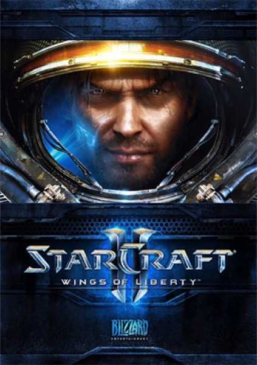

Strategy · 2010
StarCraft II: Wings of Liberty
Esports professionalised around one impeccably tuned ruleset.

Cover: Wikipedia: StarCraft II: Wings of Liberty
Facts
- Released
- 2010-07-27
- Genre
- RTS
- Category
- Strategy
- Platforms
- PC
- Developers
- Blizzard Entertainment
- Publishers
- Blizzard Entertainment